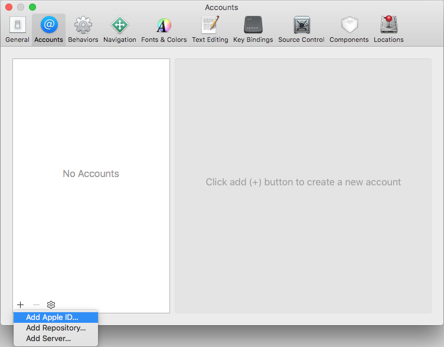

iOS account setup
A free Apple ID is all you need to test your build on any iOS devices you own. However, you should be aware that the free option is limited: you can’t use services such as Game Center or In-App Purchases, and you can’t submit your game to the App Store. You must register with the Apple Developer Program to publish your game.
If you don’t yet have an Apple ID, get one from the Apple ID site, or register with the Apple Developer Program.
Install the most up-to-date version of Xcode (available from the Mac App Store). Xcode is a Mac-only integrated development environment (IDE) containing a suite of software development tools developed by Apple for developing software for OS X, iOS, WatchOS and tvOS.
Adding your Apple ID to Xcode
Open Xcode.
From the menu bar select Xcode > Preferences to open the Preferences window.
Choose Accounts at the top of the window to display information about the Apple IDs that have been added to Xcode.
Click the plus sign in the bottom-left corner and choose Apple ID from the window that appears and click Continue.

Enter your Apple ID in the pop-up window that appears, and click Next.
Enter your password, and click Next.
Select your Apple ID in the list to see more information about it.

The Team section contains a list of all Apple Developer Program teams that you are a part of. If you’re using a free Apple ID that isn’t enrolled in the Apple Developer Program, a Personal Team is automatically created using your name.
Xcode can automatically configure your certificates, provisioning profiles and devices. If you’re enrolled in the Apple Developer Program, you can use the Apple Developer Portal to do this manually.